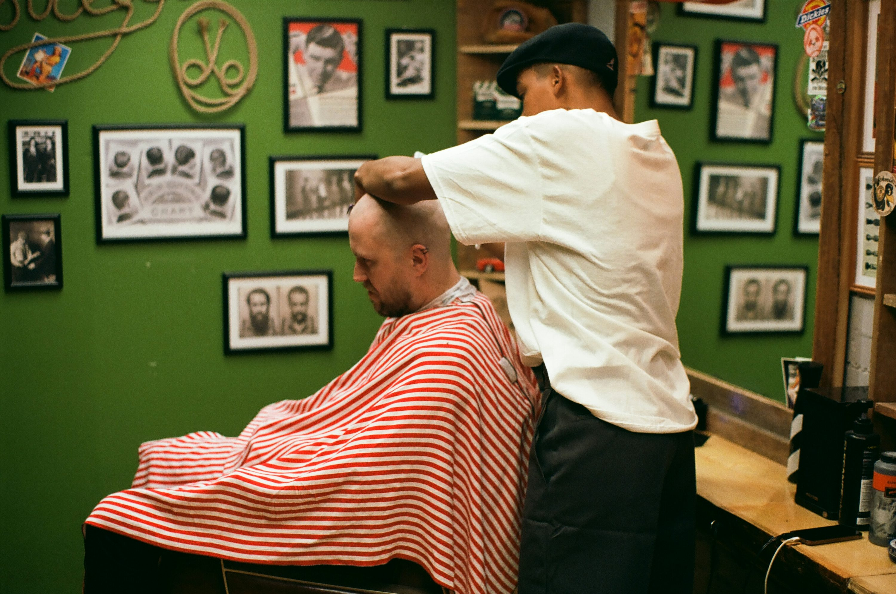
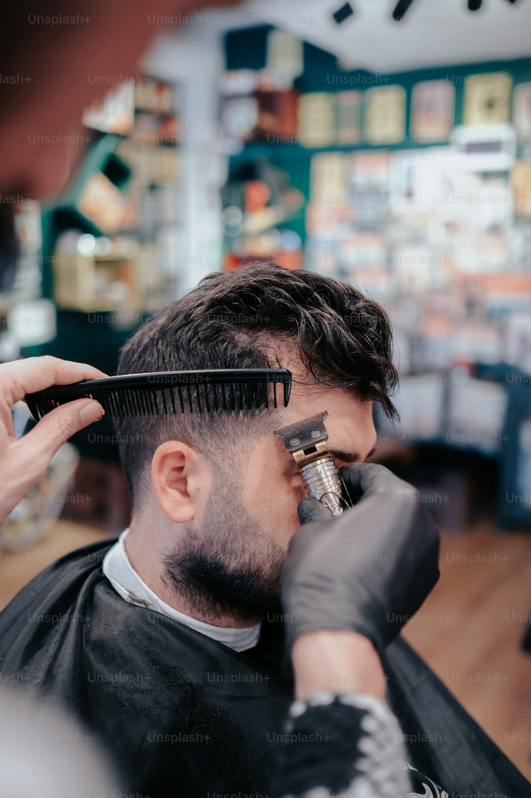
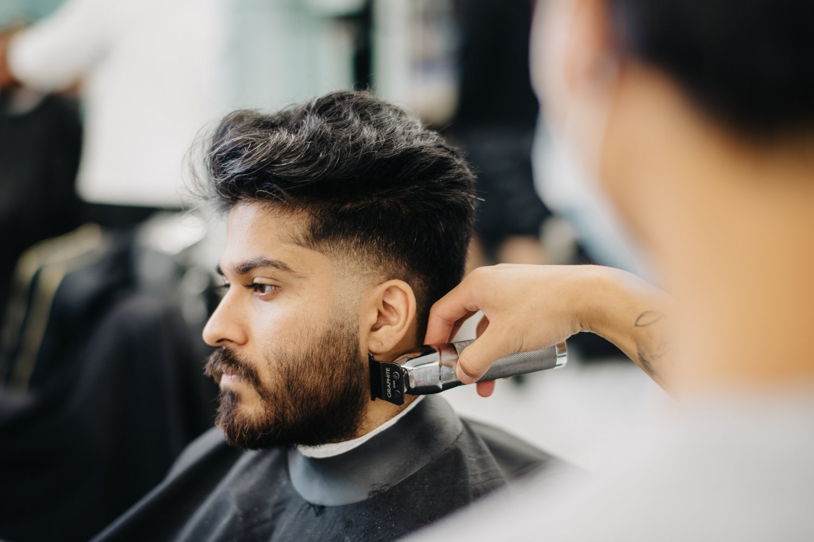
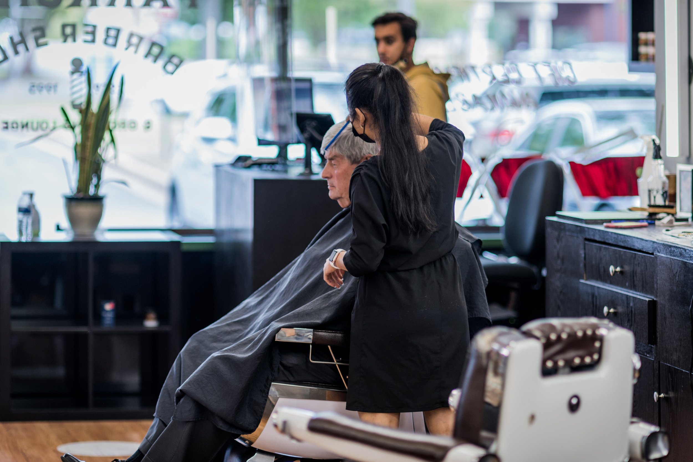
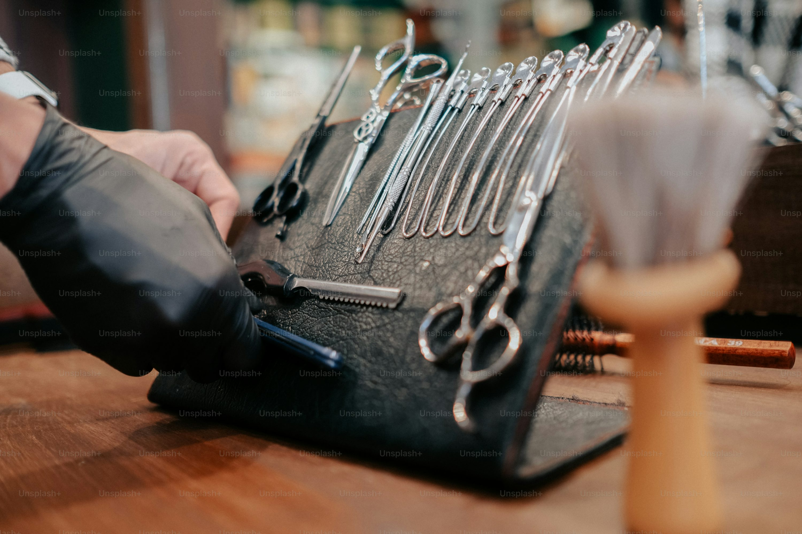
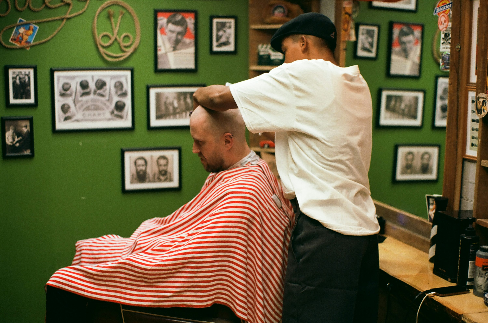
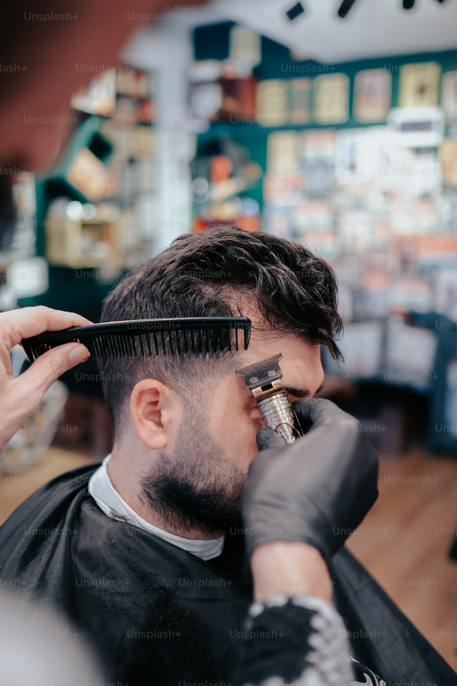
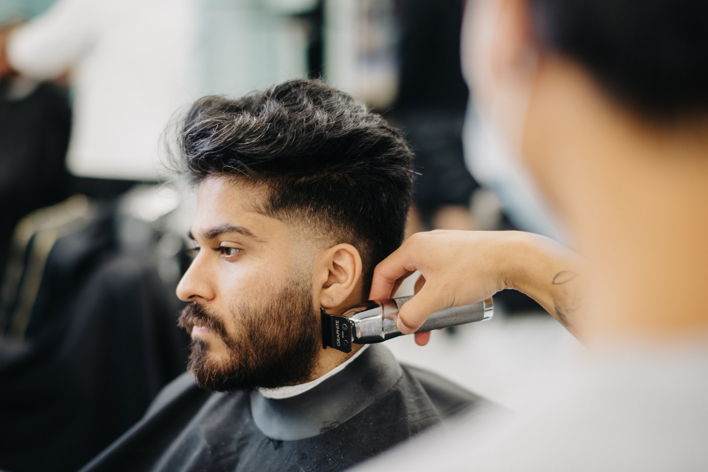
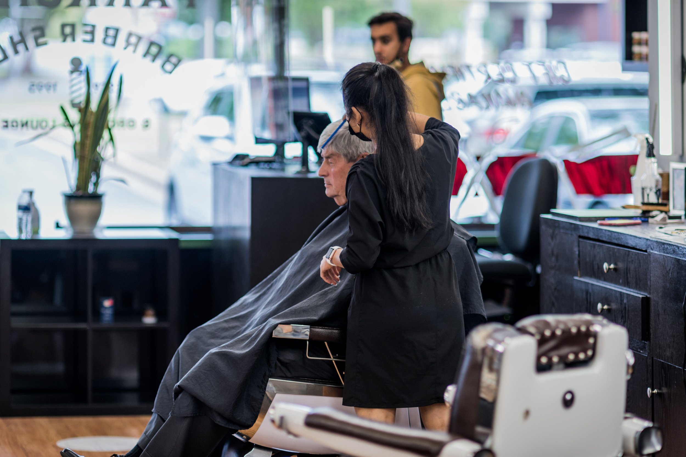
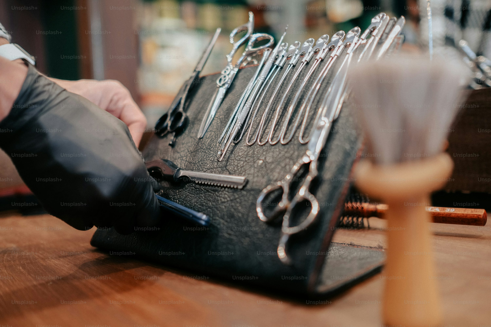

Our Story
Founded in 1995 by Master Barber James Mason, Mason's Barber Shop has been a cornerstone of the community for over 25 years. What started as a small, one-chair operation has grown into a beloved establishment where traditional craftsmanship meets modern style.
James learned the art of barbering from his father, who ran a shop in downtown for over four decades. This family legacy of precision cuts and warm, personal service continues to this day. Every customer who walks through our doors isn't just a client – they're part of our extended family.
Over the years, we've expanded our services while maintaining the intimate, welcoming atmosphere that made us famous. Our team of skilled barbers combines time-honored techniques with contemporary styles to give each client exactly what they're looking for. Whether you're here for a classic cut, hot towel shave, or modern styling, you'll experience the difference that decades of expertise makes.
Today, Mason's Barber Shop stands as a testament to the enduring value of quality service, attention to detail, and genuine community connection. We're proud to be your neighborhood barber shop, and we look forward to continuing our tradition of excellence for generations to come.
 








